| 项目类型 | QEA（Quantitative Engineering Analysis）课程项目 |
| 项目角色 | 结构设计与稳性计算 |
| 核心工具 | SolidWorks / MATLAB / Altium Designer |
本项目为QEA课程综合设计，要求从零设计并制造一艘电动船，完成水面自主航行。项目涵盖船体结构设计（SolidWorks三维建模）、流体力学稳性分析（MATLAB数值计算）、供电与驱动系统设计、以及实船制造与下水测试。
采用SolidWorks进行船体三维建模，船体结构由以下零部件组成：
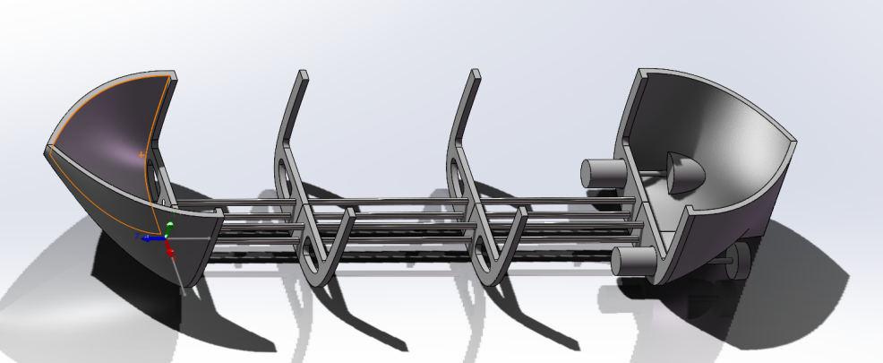
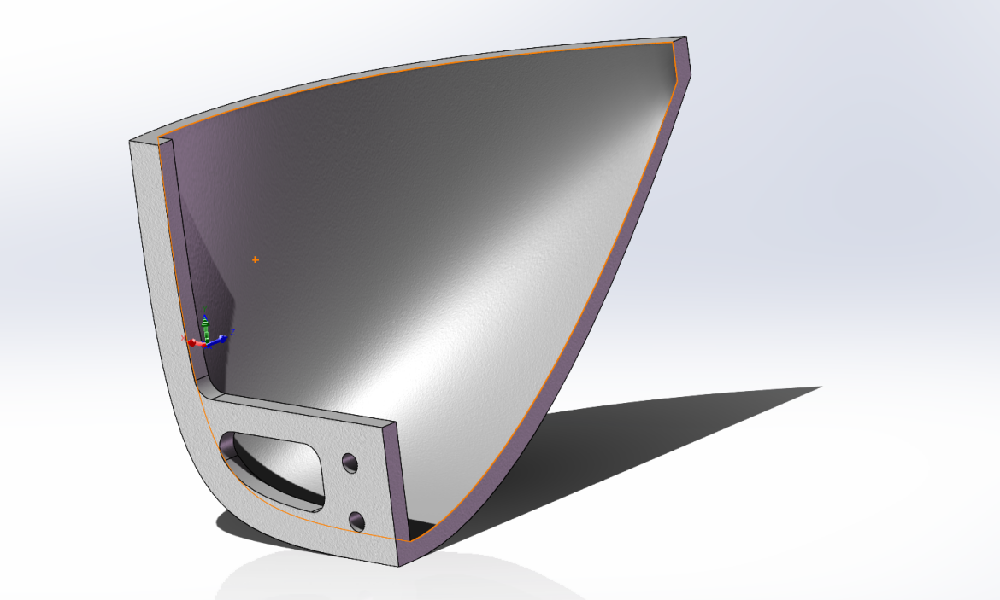
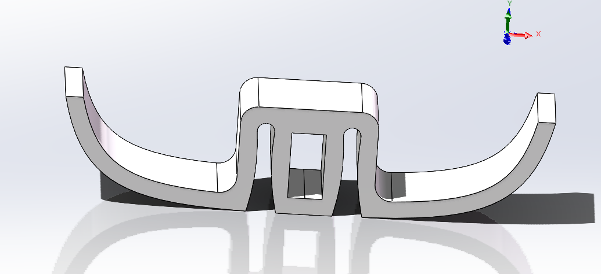
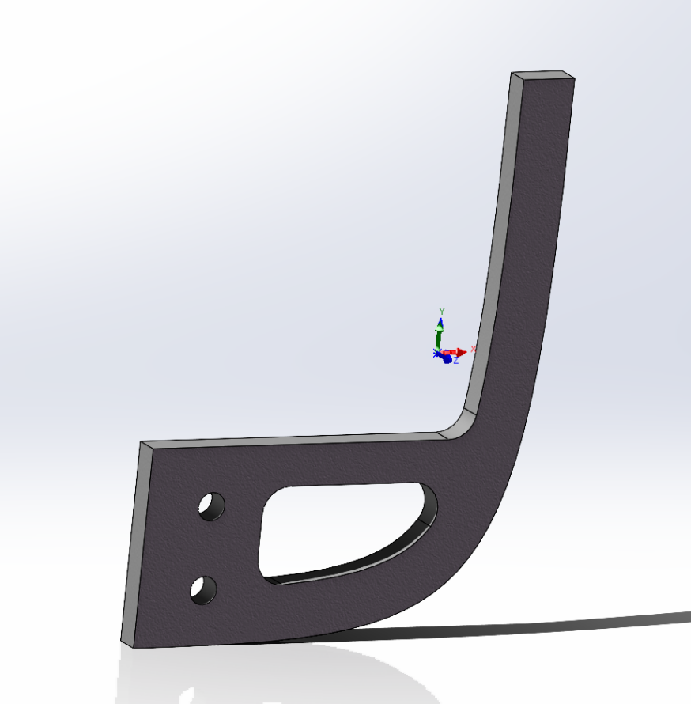
船舶稳性是安全航行的核心指标。本项目采用MATLAB进行数值化稳性分析，核心思路为：通过离散化船体网格，在不同横倾角下迭代求解吃水线位置，进而计算浮心坐标与复原力臂（GZ值）。
采用幂函数截面描述船体横截面形状，通过参数 hull.width、hull.deep、hull.n 控制切片宽度、深度与曲线形状：
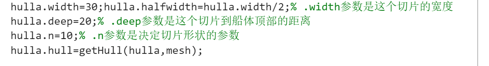
getHull() 函数将参数化截面映射到离散网格上，生成布尔矩阵标记船体内部区域：
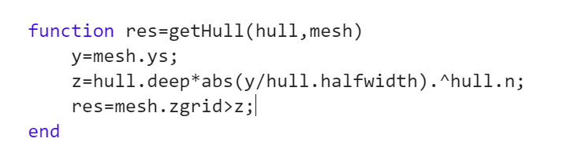
对于给定横倾角，需找到满足重力=浮力的吃水线位置。getwaterline2() 函数通过 while 循环逐步抬升吃水线，直到浸没体积产生的浮力等于船重：
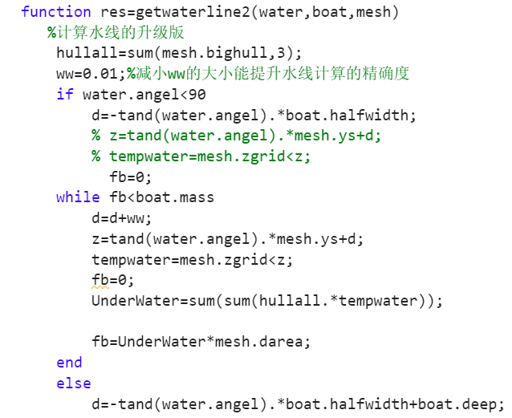
浮心坐标由 bofy2() 和 bofz2() 分别计算Y/Z方向的浮心偏移：
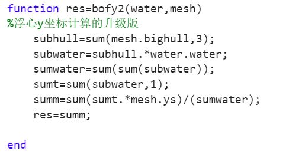
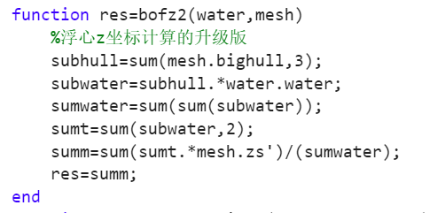
复原力臂 GZ 是衡量船舶稳性的关键指标，定义为浮心相对重心的横向力臂。对不同横倾角 θ ∈ [0°, 180°] 扫描，计算各角度的 GZ 值绘制稳性曲线。航向角修正通过以下公式实现：
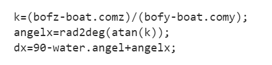
稳性分析的关键结论：重心低→定倾高度（GM）大→复原力臂（GZ）大→稳度好；反之则稳度差。
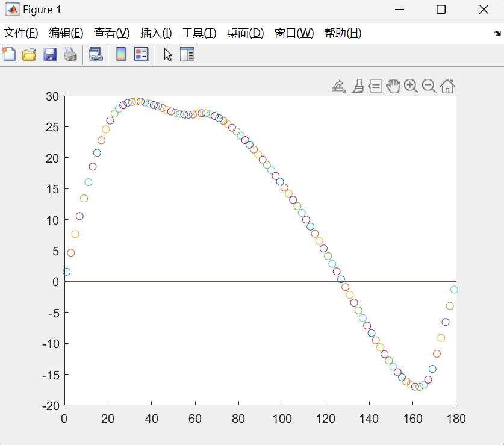
根据SolidWorks三维模型，采用激光切割木板+蓝色防水胶带外蒙皮方案制造实船。实测结果验证了稳性分析的有效性。
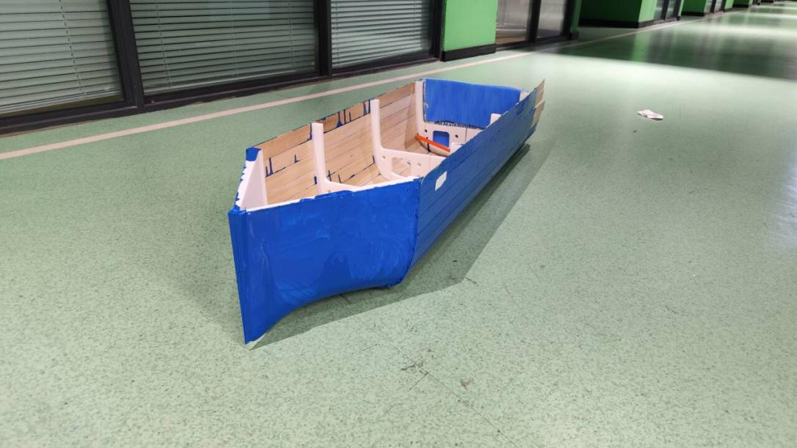